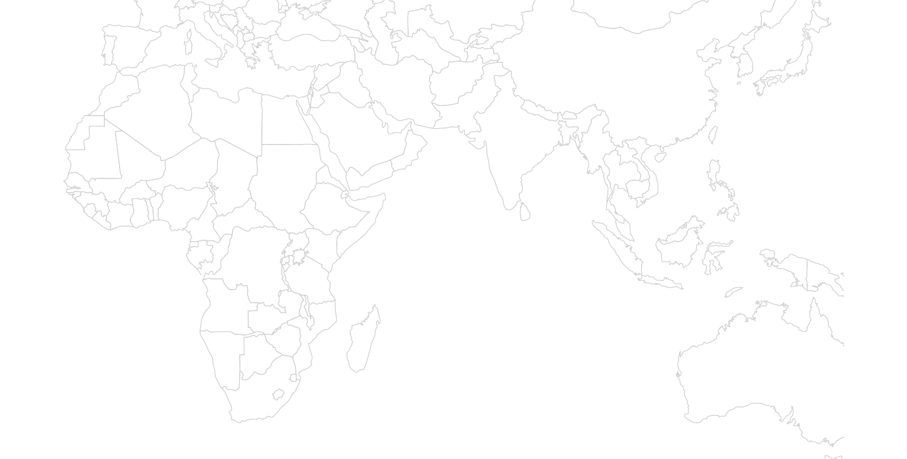
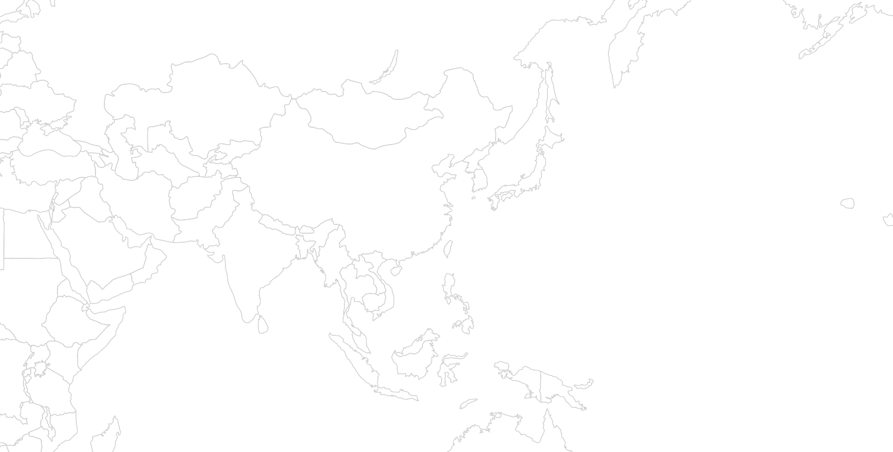
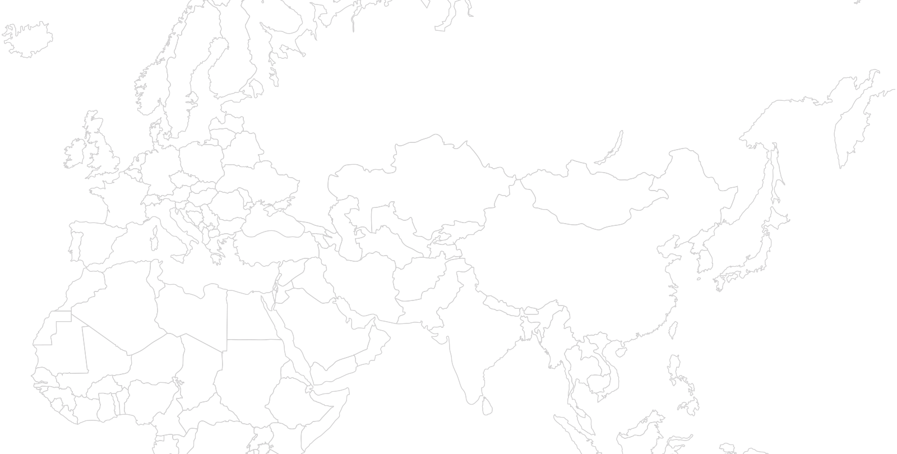
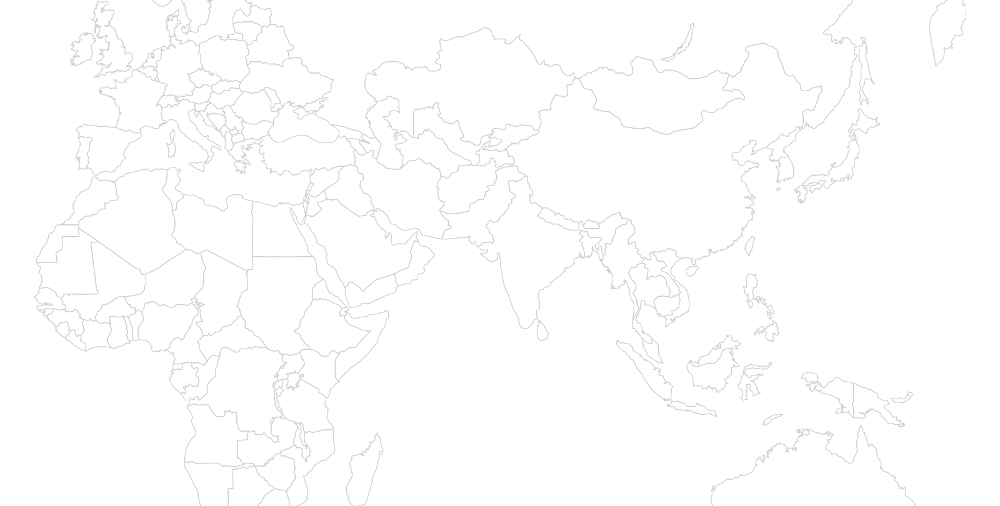

본문 바로가기
K&C 소개
연혁
글로벌 역량
사회공헌
Global Standards and Network
세계 680여개의 로펌과 연결된 풍부한 네트워크
김·장 법률사무소는 일본, 중국, 유럽 등 별도의 그룹과 함께 해외법무 그룹을 운영하여,
고객들이 진출하고자 하는 지역 및 산업분야별로 담당 변호사와 자문인력을 운용하여
해외 프로젝트에서 발생할 수 있는 모든 법률문제에 대하여 최적의 서비스를 제공하고 있습니다.

EUROPE
MENA
ASIA
AFRICA
OCEANIA
NORTH
AMERICA
SOUTH
AMERICA
Algeria
Angola
Egypt
Kenya
Libya
Madagascar
Mali
Namibia
Niger
Nigeria
Rwanda

전체보기
Cambodia
China
Hong Kong
India
Indonesia
Japan
Kazakhstan
Malaysia
North Korea
Pakistan
Philippines
Singapore
Sri Lanka
Thailand
Vietnam

전체보기
Azerbaijan
Belgium
Bulgaria
France
Germany
Italy
Norway
Romania
Russia
Slovakia
Spain
The Netherlands
Turkey
UK

전체보기
Jordan
Oman
Qatar
Saudi Arabia
UAE
Yemen

전체보기
Canada
USA

전체보기
Australia
New Caledonia
New Zealand

전체보기
Brazil
Haiti
Mexico
Peru

전체보기
Office Location
Team
Professionals
Cases
Law Firm Network
Related News
닫기